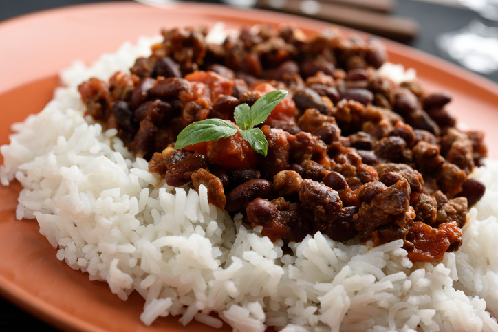

Comidas Populares |
||
|---|---|---|
AjiacoPrato também presente em outros países latinos, como na gastronomia colombiana, é feito à base de sopa de batata, frango e milho. As batatas usadas não são do tipo convencional, mas três ou mais variedades nativas de Cuba. O sabor diferenciado é dado pela Guasca, uma erva comum e muito usada na culinária cubana. Geralmente também acompanha creme de leite, abacate e alcaparras, o que faz a iguaria uma refeição completa. |

Arroz CongrísO Congrís é um prato quase brasileiro. Trata-se de arroz com feijão vermelho cozidos juntos na mesma panela. O seu outro nome, “Mouros e Cristãos” faz referência ao domínio árabe na Espanha que durou mais de 500 anos (711 – 1494). “Mouros” referindo-se aos árabes africanos de pele mais escura e “Cristãos” referindo-se aos ibéricos. |
ChicharronesChicharrones é o famoso “Torresmo”, como chamamos aqui no Brasil. Os Chicharrones cubanos costumam ser acompanhados de arroz Congrís ou outros ingredientes, como carne, mandioca e batatas. É considerado um alimento base na gastronomia da Ilha. Por serem fritos e derivados de carne suína, é um prato com alto teor calórico e de gorduras. |
Principais Atrações |
||
Cidade do Habana ViejaLa Habana Viejaé o centro histórico da cidade de Havana, formado a partir do porto e o centro oficial, a Plaza de Armas (Praça de Armas). Nela encontrarás todo tipo de monumentos pintorescos, fortalezas, igrejas, palácios, etc. A cidade está repleta de autênticas jóias arquitetônicas de diversas épocas e oferece uma das coleções de edificações urbanísticas mais completas de toda a América. |
Capitolio Nacional de CubaO Capitolio Nacional de Cuba (Capitólio Nacional de Cuba) é um dos edifícios mais emblemáticos da cidade de Havana. Este majestoso edifício - semelhante ao Capitólio de Washington D.C, porém é 1 metro mais alto, 1 metro mais largo, tem mais 1 metro de comprimento e é muito mais pormenorizado - situa-se no Centro Habana |
Malecón de La HabanaO Malecón de La Habana é um sugestivo passeio marítimo de cerca de 8km de extensão, localizado em Havana. Este enorme passeio é também uma das avenidas mais autênticas e famosas de Cuba |